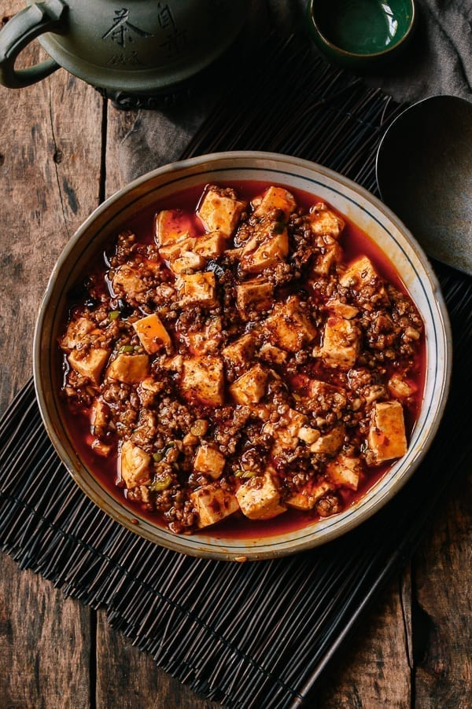

Mapo Tofu (麻婆豆腐)
Mapo Tofu is a popular Chinese dish from Sichuan Province, where spicy food is king
and the signature spice of the region—the Sichuan Peppercorn—gives
dishes a unique “numbing” effect. It's almost like the Sichuan peppercorns are
there to not only add their fragrance and flavor, but also to numb your tongue so it
can take more heat! This recipe was obtained from The Woks of Life by
Kaitlin.

Recipe
Ingredients
- 1/2 cup oil
- 1-2 thinly sliced fresh Thai bird chili peppers
- 6-8 roughly chopped dried red chilies
- 1/2-1 1/2 tablespoons Sichuan peppercorns
- 3 tablespoons finely minced ginger
- 3 tablespoons finely minced garlic
- 8 ounces ground pork (225 g)
- 1-2 tablespoons spicy bean sauce
- 2/3 cup low sodium chicken broth
- 1 pound silken tofu cut into 1 inch cubes (450 g)
- 1 1/2 teaspoons cornstarch
- 1/4 teaspoon sesame oil
- 1/4 teaspoon sugar
- 1 finely chopped scallion
Instructions
- Heat wok or small saucepan over low heat, add 1/4 cup of oil and fresh and dried
chili peppers. Stir for 5 min until fragrant, making sure not to burn the peppers.
Remove from heat.
- Heat remaining oil in wok over medium heat. Add ginger, after 1 minute, add garlic
and fry for another minute.
- Turn up heat then add ground pork. break them up and fry until cooked. Then
add ground Sichuan peppercorns
- Add spicy bean sauce to the mixture.
- Mix it well until the color changes.
- Add the chicken broth and stir. Let it simmer for a minute.
- Add 1/4 cup of water in a small bowl with cornstarch and mix until combined.
- Add the mixture to the sauce and stir until the sauce thickens.
- Add chili oil from before to the sauce. Stir then add the tofu and gently toss.
Let it cook for 3-5 minutes.
- Add sesame oil, sugar, and scallions and stir until scallions wilt.
- Serve with last sprinkle of Sichuan peppercorn garnish if desired.